Wonderland Đà Lạt: Địa điểm vui chơi, Instagrammable hot nhất 2025
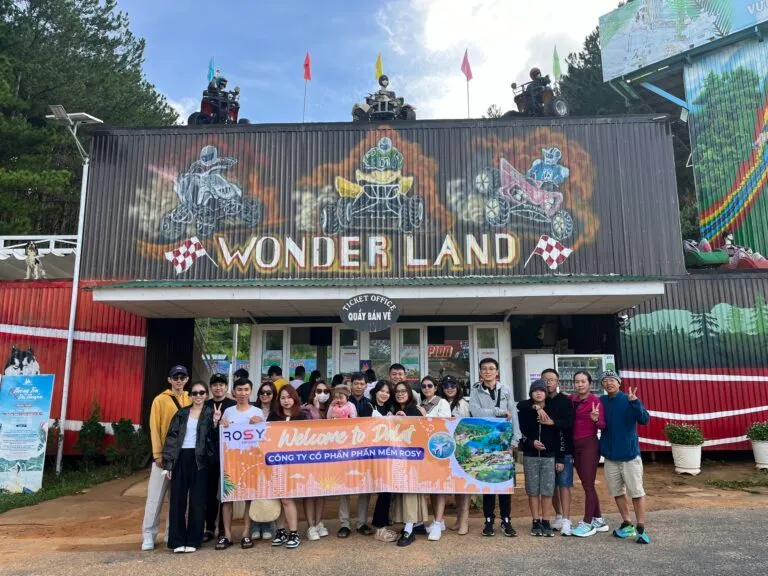
Table of Contents
- 1. Thông tin tổng quan về Wonderland Đà Lạt
- 2. Hướng dẫn di chuyển đến Wonderland Đà Lạt
-
3. Wonderland Đà Lạt – Có gì hấp dẫn tại khu vui chơi “nổi như cồn”?
- 3.1. Khu vườn thú Wonderland Đà Lạt gần gũi với thiên nhiên
- 3.2. Du ngoạn hồ Tuyền Lâm bằng thuyền tại Wonderland Đà Lạt
- 3.3. Khu trò chơi thực tế ảo modern tại Wonderland Đà Lạt
- 3.4. Lâu đài băng giá Wonderland Đà Lạt duy nhất tại Đà Lạt
- 3.5. Thiên đường vui chơi dành cho trẻ nhỏ tại Wonderland Đà Lạt
- 3.6. Park khủng long & Tàu lửa 1979 tại Wonderland Đà Lạt
- 3.7. Thử tài bắn cung Wonderland Đà Lạt
- 3.8. Xe trượt & xe địa hình – dành cho tín đồ tốc độ tại Wonderland Đà Lạt
- 3.9. Lâu đài ma – trải nghiệm rùng rợn tại Wonderland Đà Lạt
- 3.10. Đường trượt phao khô – sảng khoái và đầy màu sắc tại Wonderland Đà Lạt
- 3.11. Hồ hẹn ước Wonderland Đà Lạt – góc romantic dành cho các cặp đôi
- 3.12. Không gian take photos 3D & tiểu cảnh Instagrammable tại Wonderland Đà Lạt
- 3.13. Flower Garden & đại lộ tình yêu Wonderland Đà Lạt – atmosphere châu Âu giữa lòng Đà Lạt
- 4. Kinh nghiệm vui chơi tại Wonderland Đà Lạt – Tận hưởng complete/perfect một ngày không nhàm chán
- 5. Kinh nghiệm du lịch Đà Lạt tại Wonderland Đà Lạt
- 6. Gợi ý restaurant ideal sau khi vui chơi tại Wonderland Đà Lạt: Tiệm Nướng & Chill Xóm Lèo
Thành phố ngàn hoa Đà Lạt luôn không ngừng làm mới mình với nhiều location du lịch unique, attracts a large number of visitors từ khắp nơi. Một trong những điểm dừng chân đang “gây sốt” thời gian gần đây chính là Wonderland Đà Lạt – khu vui chơi giải trí được nhiều people yêu thích nhờ atmosphere đẹp mắt và diverse hoạt động suitable cho mọi lứa tuổi.

Tại đây, you can trải nghiệm vô số hoạt động hấp dẫn như lái xe địa hình, trượt phao, discover khu vườn thú và đà điểu, cùng nhiều trò chơi thú vị khác. Nhờ vậy, Wonderland trở thành nơi ideal để bạn enjoy một ngày complete/perfect vui chơi, thư giãn giữa thiên nhiên trong lành của Đà Lạt. Nếu đang tìm kiếm một destination mới lạ cho hành trình discover phố núi, đừng bỏ qua Wonderland nhé!
1. Thông tin tổng quan về Wonderland Đà Lạt
1.1. Vị trí của Wonderland Đà Lạt
Wonderland Đà Lạt tọa lạc trong khuôn viên của Dalat Wonder Resort, có địa chỉ cụ thể tại số 19 đường Hoa Hồng, khu vực Tuyen Lam Lake, phường 4, thành phố Đà Lạt. Vị trí này rất convenient để kết hợp nghỉ dưỡng và vui chơi giải trí khi đến với the misty city.
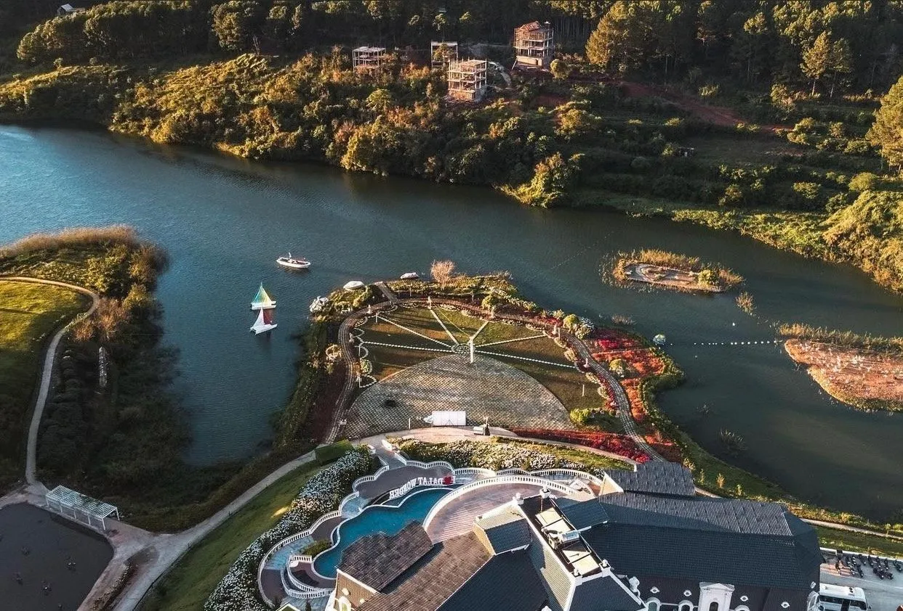
1.2. Giờ mở cửa và giá vé visit/explore Wonderland
Khu vui chơi Wonderland mở cửa từ 8h00 đến 17h00 daily. With nhiều hoạt động diverse, bạn hoàn toàn có thể dành nguyên một ngày để discover và thư giãn tại đây.
Hiện tại, Wonderland Đà Lạt áp dụng hai mức giá vé khác nhau, tùy thuộc vào đối tượng visitors:
-
Khách lưu trú tại Dalat Wonder Resort:
-
Người lớn: 300.000 VND/vé
-
Trẻ em (cao từ 0,8 – 1,4m): 150.000 VND/vé
-
-
Khách không lưu trú (khách lẻ):
-
Người lớn: 380.000 VND/vé
-
Trẻ em (cao từ 0,8 – 1,4m): 190.000 VND/vé
-
Trẻ dưới 0,8m sẽ được free vé vào cổng.
Lưu ý: Mức vé này là trọn gói, bao gồm tất cả trò chơi có trong khu vui chơi. However, các service dining tại nhà hàng Salon De Thé sẽ tính phí riêng, không nằm trong giá vé.
1.3. Bản đồ khu vui chơi Wonderland Đà Lạt
Do diện tích của Wonderland khá rộng lớn, visitors được khuyến khích lưu lại bản đồ khuôn viên để convenient di chuyển và không bỏ lỡ bất kỳ hoạt động hấp dẫn nào tại đây. Nhờ bản đồ, you can dễ dàng discover mọi khu vực và trải nghiệm complete/perfect một ngày đầy niềm vui tại Wonderland.
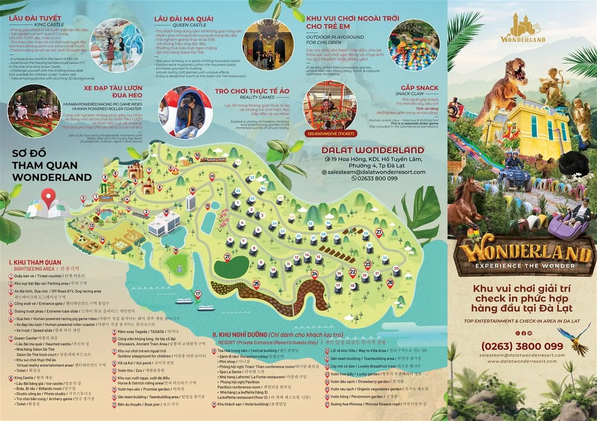
2. Hướng dẫn di chuyển đến Wonderland Đà Lạt
Để đến được Wonderland Đà Lạt, visitors có thể lựa chọn di chuyển bằng máy bay hoặc xe khách, tùy theo điểm xuất phát và nhu cầu cá nhân.
2.1. Di chuyển bằng máy bay đến Wonderland Đà Lạt
Máy bay là phương tiện nhanh chóng và tiện lợi nhất nếu bạn xuất phát từ các thành phố lớn như TP.HCM, Hà Nội, Đà Nẵng,… Các chuyến bay sẽ hạ cánh tại Lien Khuong Airport, from downtown Da Lat khoảng 30km. Từ sân bay, you can đi taxi, xe service, hoặc bus công cộng để vào trung tâm thành phố với thời gian khoảng 30–40 minutes.
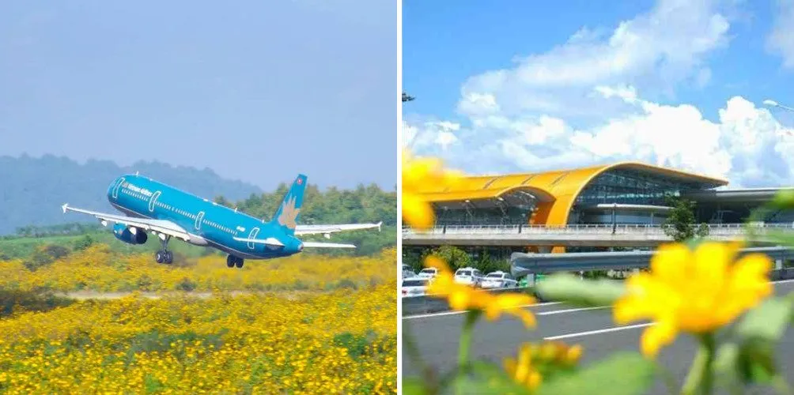
2.2. Di chuyển bằng xe khách đến Wonderland Đà Lạt
In addition, nếu bạn muốn tiết kiệm chi phí hoặc yêu thích những trip đường dài, xe khách là lựa chọn hợp lý. Tuyến Sài Gòn – Đà Lạt có nhiều hãng xe hoạt động liên tục trong ngày, với các loại hình như giường nằm đơn, giường đôi, hoặc limousine cao cấp. Thời gian di chuyển dao động từ 6 đến 8 tiếng, suitable cho cả trip ban ngày lẫn at night.
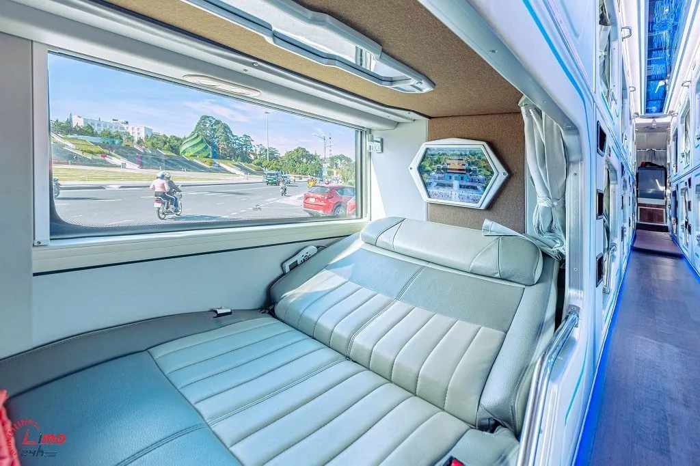
2.3. From the center đến Wonderland Đà Lạt
Khi đã đến trung tâm Đà Lạt, bạn tiếp tục di chuyển đến số 19 đường Hoa Hồng, Tuyen Lam Lake, phường 4 – nơi tọa lạc của Wonderland Đà Lạt, chỉ cách trung tâm khoảng 15 minutes đi xe. Đường đi convenient, có thể đi bằng motorbike, car hoặc taxi.
3. Wonderland Đà Lạt – Có gì hấp dẫn tại khu vui chơi “nổi như cồn”?
Wonderland Đà Lạt là destination giải trí diverse, suitable cho cả gia đình, nhóm bạn hay các cặp đôi đang tìm kiếm một ngày tràn ngập trải nghiệm tại the City of a Thousand Flowers. Let's discover xem khu vui chơi này có gì thú vị nhé!
3.1. Khu vườn thú Wonderland Đà Lạt gần gũi với thiên nhiên
Tại đây, you can gặp gỡ nhiều loài động vật đáng yêu như hươu sao, đà điểu, cún con, heo sữa, ngựa, và cả chim công, chim trĩ, hoàng yến… Điều especially là bạn còn có thể trực tiếp cho thú ăn, một hoạt động mà các bé chắc chắn sẽ rất thích thú và có cơ hội học hỏi thêm về thế giới động vật.
Nếu bạn ưa mạo hiểm, hãy thử cưỡi đà điểu — một trải nghiệm “rợn tóc gáy” nhưng cực kỳ đáng nhớ. Còn nếu thích thư giãn, cưỡi ngựa stroll around khuôn viên là lựa chọn nhẹ nhàng, romantic không kém.
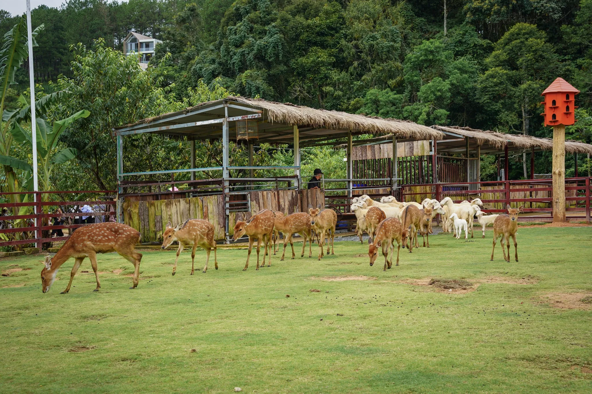
3.2. Du ngoạn hồ Tuyền Lâm bằng thuyền tại Wonderland Đà Lạt
Tận hưởng khung cảnh nên thơ và ambiance trong lành bằng cách ngồi thuyền stroll around hồ Tuyền Lâm. Khung cảnh tĩnh lặng, nước hồ phẳng lặng cùng thiên nhiên xanh mát sẽ mang đến một khoảng lặng đáng giá giữa nhịp sống bận rộn.
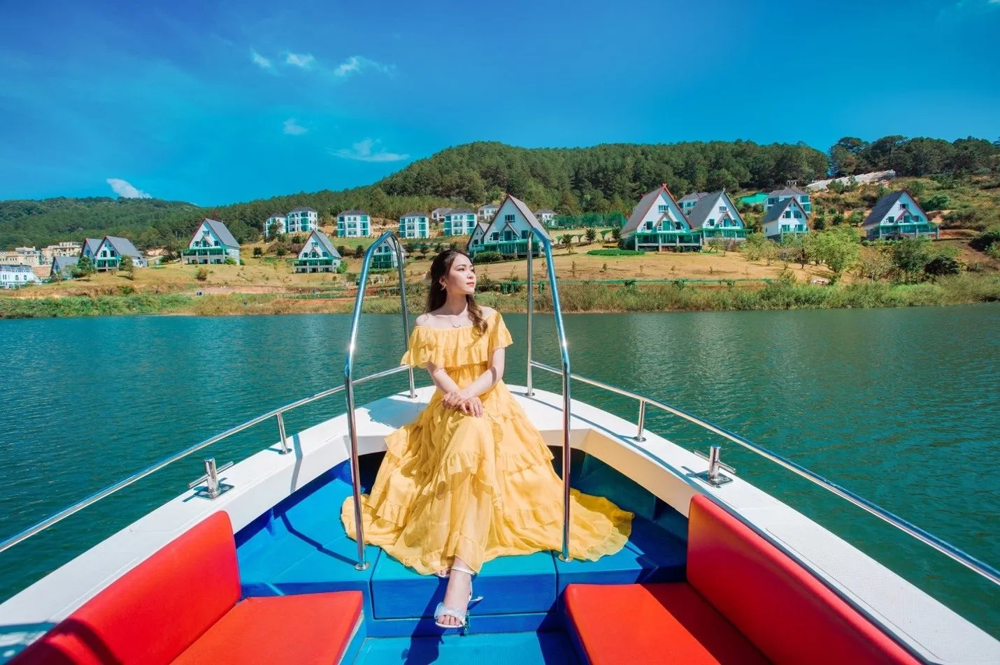
3.3. Khu trò chơi thực tế ảo modern tại Wonderland Đà Lạt
Khu vực game thực tế ảo với các trò chơi hấp dẫn như đua xe tốc độ, xem phim 5D, mô phỏng hành động… là nơi you can “Instagrammable công nghệ” hết mình. Không gian modern và diverse trò chơi khiến nơi này luôn attracts a large number of bạn trẻ.
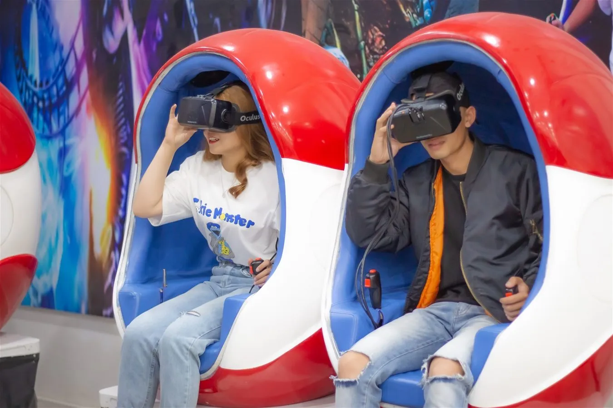
3.4. Lâu đài băng giá Wonderland Đà Lạt duy nhất tại Đà Lạt
Một điểm nhấn unique tại Wonderland là lâu đài băng giá lạnh đến -4°C, với đường trượt tuyết dài 25m. Đây là nơi ideal để bạn trải nghiệm cảm giác “chạm winter” ngay giữa lòng Đà Lạt.
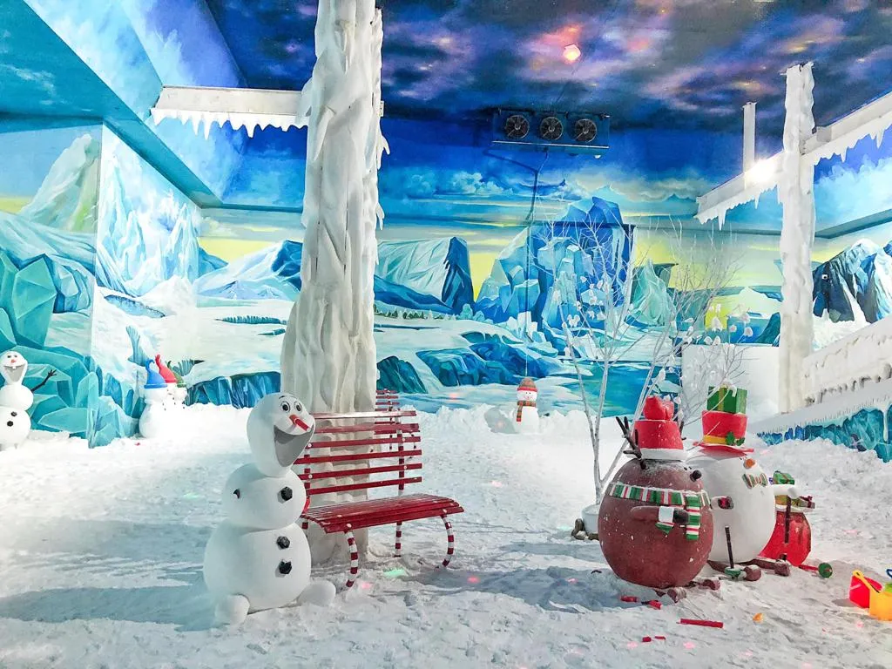
Photo: Lâu đài băng giá wonderland Đà Lạt
3.5. Thiên đường vui chơi dành cho trẻ nhỏ tại Wonderland Đà Lạt
Wonderland sở hữu cả khu vui chơi trong nhà và ngoài trời dành riêng cho children. Các trò chơi như cầu trượt, nhà banh, bạt nhún sẽ khiến các bé bận rộn cả ngày. Không gian an toàn, đầy màu sắc giúp bé vừa vui chơi, vừa phát triển kỹ năng vận động.
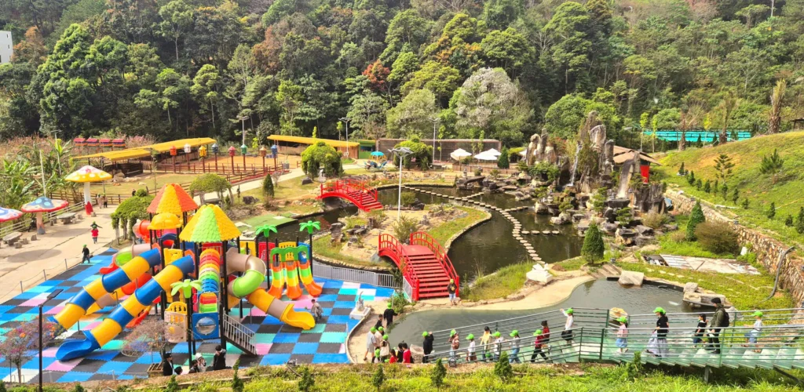
3.6. Park khủng long & Tàu lửa 1979 tại Wonderland Đà Lạt
Hành trình trên chuyến tàu cổ 1979 sẽ đưa bạn đến park khủng long, nơi có những mô hình sinh vật thời tiền sử sống động như thật. Đây chắc chắn là điểm “check-in” cực hot và đầy bất ngờ, nhất là với trẻ nhỏ hoặc people yêu thích phim ảnh giả tưởng.
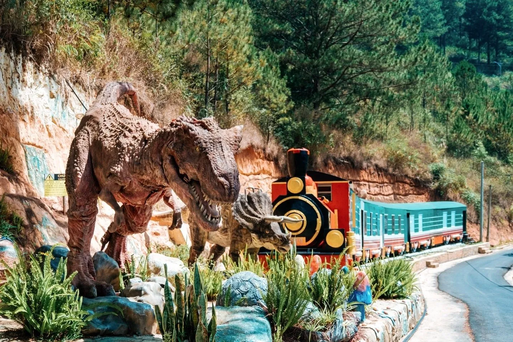
3.7. Thử tài bắn cung Wonderland Đà Lạt
Bạn muốn thử cảm giác làm cung thủ? Wonderland mang đến hoạt động bắn cung thú vị, giúp bạn kiểm tra sự tập trung và khéo léo trong một khung cảnh hoàn toàn mới.
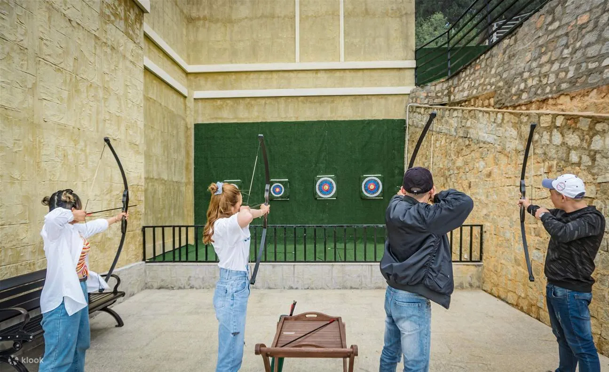
3.8. Xe trượt & xe địa hình – dành cho tín đồ tốc độ tại Wonderland Đà Lạt
Hai trò chơi “được săn lùng” nhất tại Wonderland chính là xe trượt và xe địa hình. Cảm giác lướt nhanh qua những khúc cua spectacular dưới tiết trời chilly sẽ khiến tim bạn đập loạn nhịp!
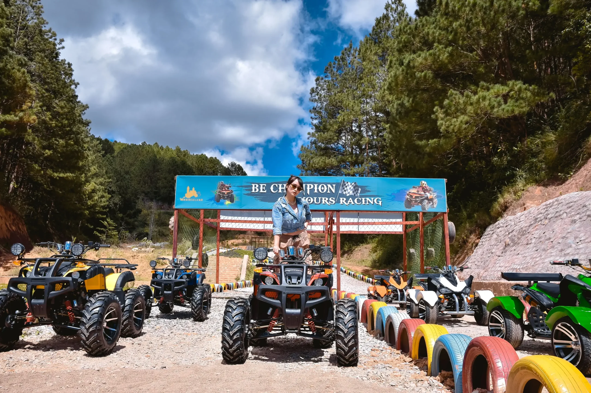
3.9. Lâu đài ma – trải nghiệm rùng rợn tại Wonderland Đà Lạt
Bạn có dám bước vào lâu đài ma quái? Không gian tối tăm, đầy âm thanh và những mô hình “hù dọa” bất ngờ chắc chắn sẽ khiến bạn hét lên không dưới một lần!
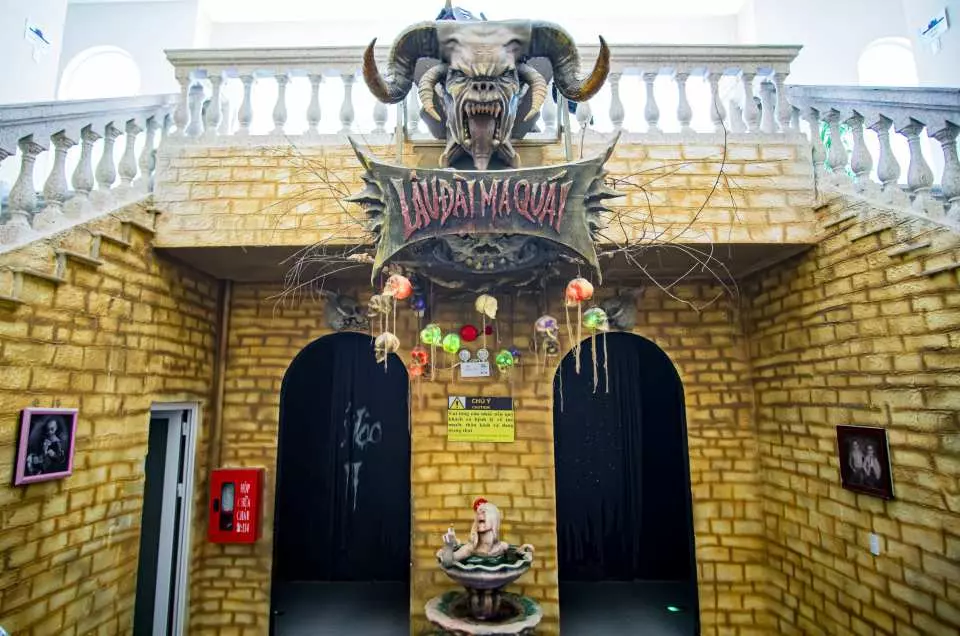
3.10. Đường trượt phao khô – sảng khoái và đầy màu sắc tại Wonderland Đà Lạt
Đường trượt có độ dốc khoảng 40 độ cùng thiết kế bắt mắt sẽ mang lại cho bạn cảm giác “bay” cực đã. Đây là trò chơi thích hợp cho mọi lứa tuổi và rất được yêu thích tại Wonderland.
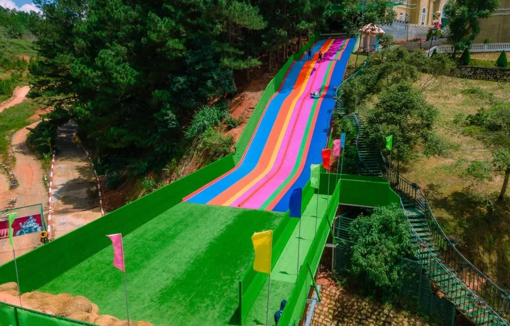
3.11. Hồ hẹn ước Wonderland Đà Lạt – góc romantic dành cho các cặp đôi
Sau khi vui chơi thỏa thích, hãy dừng chân tại Hồ hẹn ước. Nơi đây có tượng Thần Tình Yêu với thông điệp chúc phúc cho các cặp đôi và hy vọng sẽ mang duyên lành đến cho people còn độc thân.
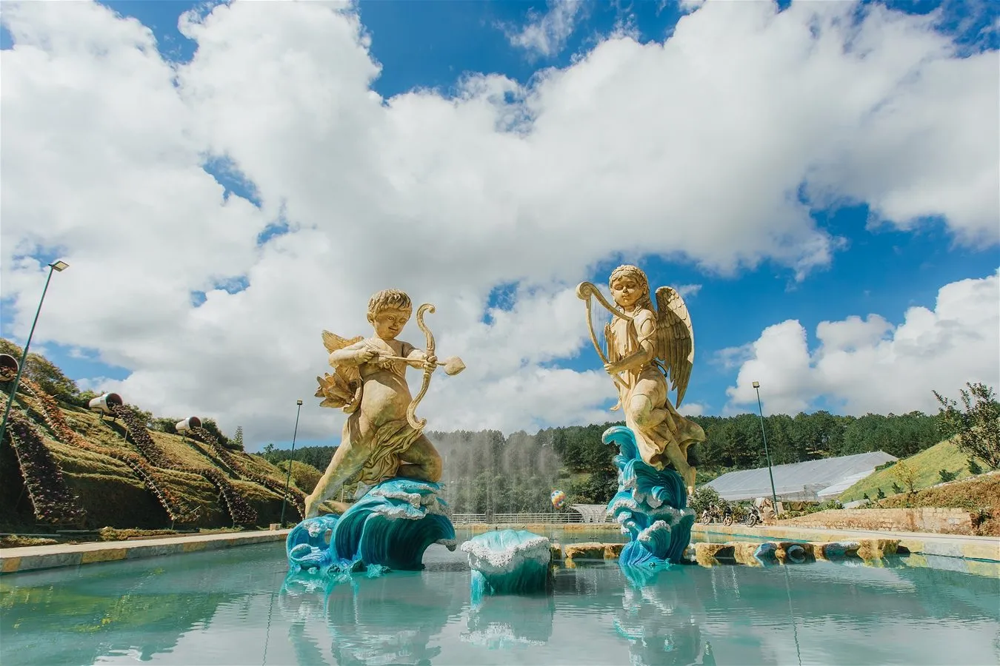
3.12. Không gian take photos 3D & tiểu cảnh Instagrammable tại Wonderland Đà Lạt
Tại Wonderland Đà Lạt, you can thỏa thích “thả dáng” tại khu take photos 3D unique, cùng hàng trăm tiểu cảnh sáng tạo. Từ lâu đài cổ tích đến atmosphere viễn tưởng, mỗi góc đều là nơi tạo nên những bức ảnh triệu like.
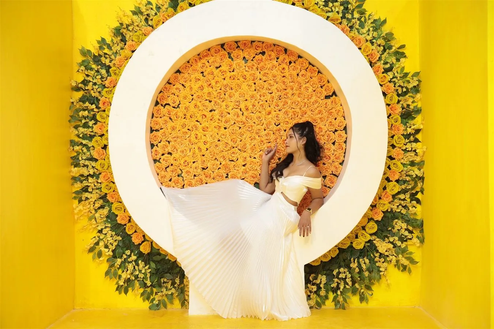
3.13. Flower Garden & đại lộ tình yêu Wonderland Đà Lạt – atmosphere châu Âu giữa lòng Đà Lạt
Wonderland còn sở hữu flower garden khoe sắc quanh năm, especially là những khóm cẩm tú cầu rực rỡ. Don't forget visit Đại lộ tình yêu, nơi you can chiêm ngưỡng khung cảnh nên thơ của Dalat Wonder Resort — được ví như “châu Âu thu nhỏ” giữa lòng the highlands.
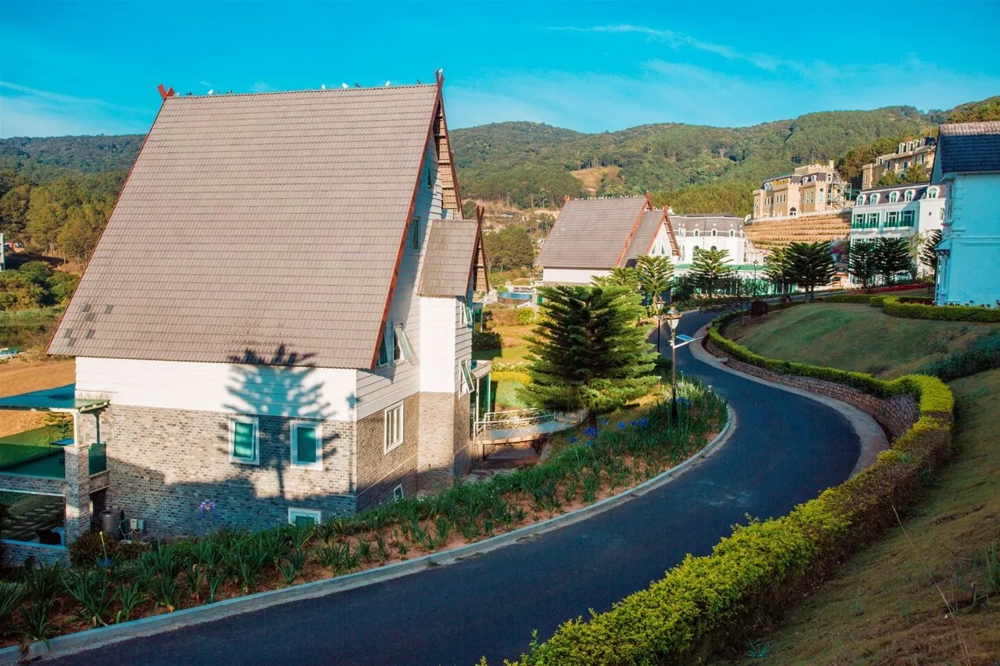
4. Kinh nghiệm vui chơi tại Wonderland Đà Lạt – Tận hưởng complete/perfect một ngày không nhàm chán
Bạn sắp có trip đến Wonderland Đà Lạt? Below are những experience/tips cần thiết giúp bạn lên kế hoạch complete/perfect và tiết kiệm hơn cho trip của mình!
4.1. Mua vé – Đặt trước để tiết kiệm thời gian khi đến Wonderland Đà Lạt
You can mua vé trực tiếp tại cổng khu vui chơi, however nếu muốn tiết kiệm thời gian chờ đợi, you should đặt vé trước qua các nền tảng bán vé trực tuyến. Ngoài việc tránh phải xếp hàng, đặt vé sớm cũng có thể giúp bạn săn được giá ưu đãi, especially nếu kết hợp với vé máy bay hay đặt phòng hotel.
4.2. What to Eat in Wonderland Đà Lạt? – Nhà hàng trong khuôn viên
Ngay trong khu vực Wonderland có nhà hàng Salon De Thé, nơi you can dùng bữa trưa sau khi visit/explore, vui chơi. Thực đơn tại đây diverse với mức giá dao động từ 40.000 – 250.000 VND, suitable với nhiều nhu cầu.
Not only food ngon, atmosphere nhà hàng được thiết kế rất đẹp mắt, thích hợp để bạn tranh thủ “Instagrammable” vài bức ảnh thật chất cho bộ sưu tập ảnh du lịch Đà Lạt.
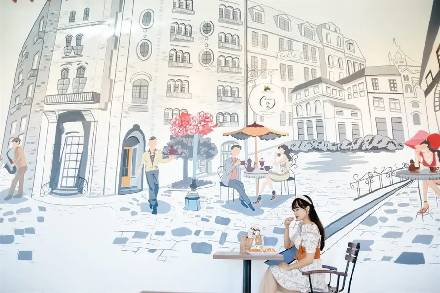
5. Kinh nghiệm du lịch Đà Lạt tại Wonderland Đà Lạt
5.1. Gợi ý destination khác Wonderland Đà Lạt khi du lịch Đà Lạt
Ngoài Wonderland, Đà Lạt còn sở hữu rất nhiều destination hấp dẫn khác mà you can kết hợp trong trip dài ngày:
-
Datanla Waterfall – nơi ideal để thử máng trượt hoặc leo dây mạo hiểm
-
Thị trấn Nobi Đà Lạt – atmosphere đậm chất Nhật Bản giữa lòng the highlands
-
Palace Bảo Đại – kiến trúc ancient ghi dấu thời vua chúa
-
Lake of Sighs – destination poetic, gắn liền với nhiều giai thoại tình yêu
-
ZooDoo Đà Lạt – sở thú friendly với mô hình bán hoang dã
-
Puppy Farm – thiên đường cho people yêu chó và nông trại xanh
Lưu ý nhỏ: Nhiều điểm visit/explore ở Đà Lạt khá đông vào mùa cao điểm, therefore nên đặt vé online trước để tránh mất thời gian xếp hàng.
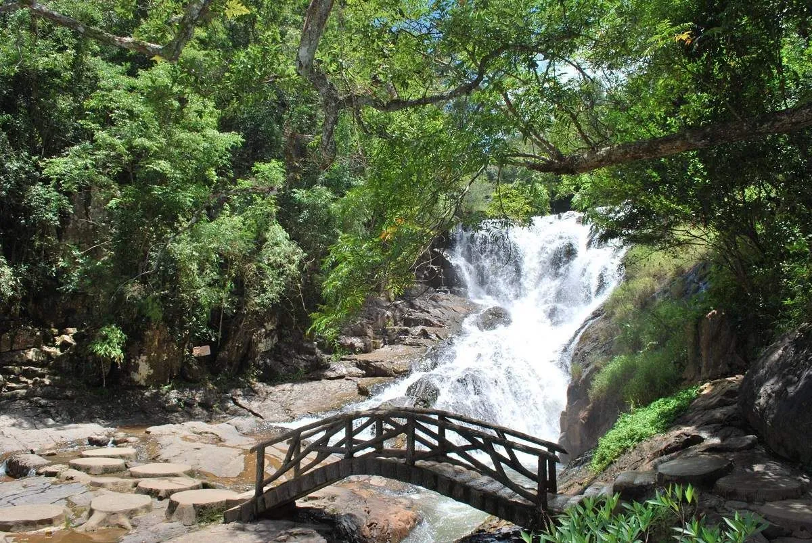
5.2. Đà Lạt ăn gì ngon? – Don't miss cuisine đường phố gần Wonderland Đà Lạt
Ẩm thực là một phần không thể thiếu trong hành trình discover Đà Lạt. Below are những món đặc trưng you should thử ít nhất một lần:
-
Nem nướng Đà Lạt – thơm, béo, ăn kèm rau sống cực cuốn
-
Bánh căn – dishes sáng giòn rụm, thường ăn kèm nước mắm xíu mại
-
Bánh mì xíu mại – nóng hổi, đậm đà và dễ ăn
-
Ốc nhồi thịt – món khoái khẩu đặc trưng trong tiết trời chilly
-
Xắp xắp – gỏi khô bò kiểu Đà Lạt với hương vị cay nồng
-
Sữa đậu nành nóng, sữa chua phô mai – specialty dễ tìm ở các khu night market
5.3. Chỗ nghỉ ideal – Gần Wonderland Đà Lạt để tiện vui chơi
Wonderland Đà Lạt nằm trong khuôn viên của Dalat Wonder Resort, therefore nếu bạn muốn tiết kiệm thời gian di chuyển, có thể chọn nghỉ ngay tại resort này. In addition, Đà Lạt có rất nhiều lựa chọn hotel và resort khác suitable với ngân sách và sở thích cá nhân:
Một số nơi được visitors yêu thích:
-
Terracotta Hotel & Resort Đà Lạt – gần hồ Tuyền Lâm, amenities modern
-
The Grace Hotel Dalat – phong cách trẻ trung, vị trí gần trung tâm
-
New Century Hotel Dalat, La Paix Dalat, Le Récit Boutique Hotel – thích hợp cho các cặp đôi, gia đình hoặc nhóm bạn nhỏ
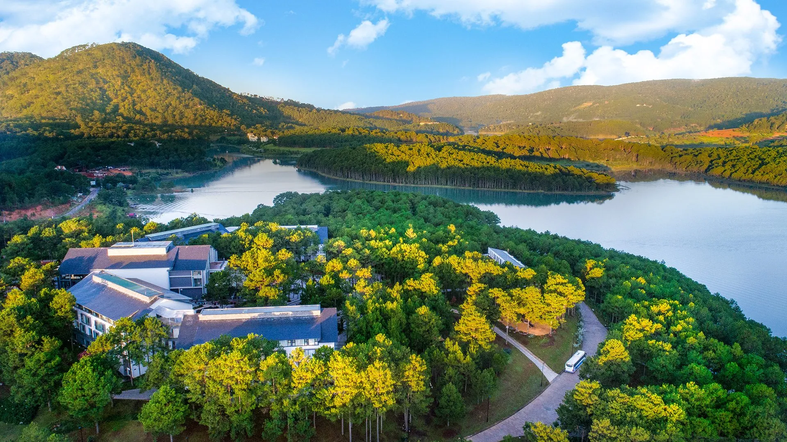
6. Gợi ý restaurant ideal sau khi vui chơi tại Wonderland Đà Lạt: Tiệm Nướng & Chill Xóm Lèo
Sau một ngày thỏa sức discover Wonderland Đà Lạt với đủ trò chơi từ cưỡi ngựa, trượt tuyết đến dạo thuyền hồ Tuyền Lâm, chắc hẳn bạn sẽ muốn tìm một nơi thật chill để “nạp lại năng lượng”. Và Tiệm Nướng & Chill Xóm Lèo chính là destination perfect để kết thúc một ngày complete/perfect.
Nằm trên một ngọn đồi nhỏ, quán mang đến atmosphere mở cực chill, nơi you can vừa enjoy các grilled dishes thơm lừng trên bếp than hồng, vừa ngắm nhìn valley lên đèn trong ánh sunset. Từ khu vực bàn ngoài trời, bạn sẽ thấy được những mái nhà kính thấp thoáng, ánh sáng lấp lánh hòa vào misty/foggy chilly – một khung cảnh đặc trưng rất riêng của Đà Lạt về đêm.

Quán có menu diverse từ grilled meat, rau củ nướng đến hotpot nóng hổi, suitable cho nhóm bạn, gia đình hoặc các cặp đôi muốn tìm một atmosphere romantic nhưng vẫn gần gũi. Không khí ấm cúng, mộc mạc mà vẫn đầy phong cách chính là lý do nhiều visitors chọn nơi đây làm “trạm dừng” sau hành trình dài.
Nếu bạn đang cần một địa chỉ vừa có food ngon, vừa có beautiful view và vibe chill sau khi rời Wonderland, thì don't miss Tiệm Nướng & Chill Xóm Lèo nhé!
📍 Address: 113 Huỳnh Tấn Phát, P.11, Đà Lạt
📞 Hotline: 0764 527 336 – 0899 428 434 – 0902 912 240
📩 Book a Table: Tại Đây
📍 Chỉ Đường: Xem bản đồ